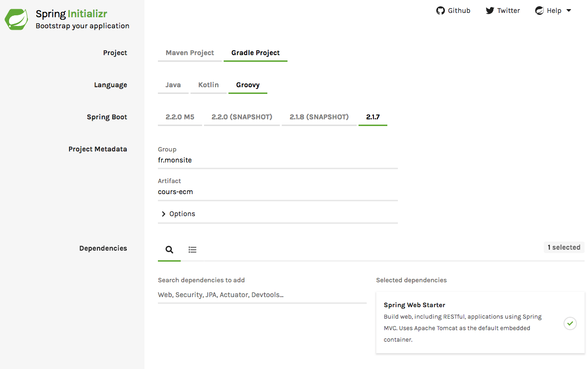
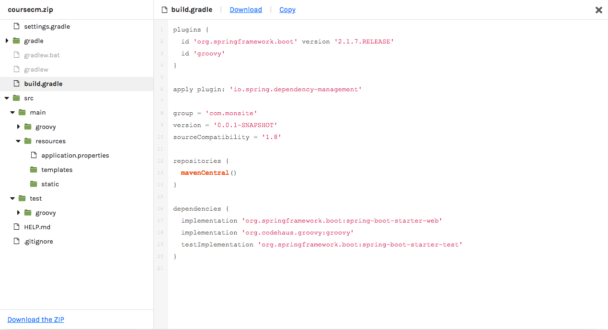
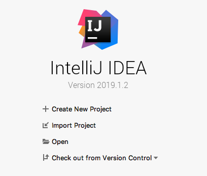
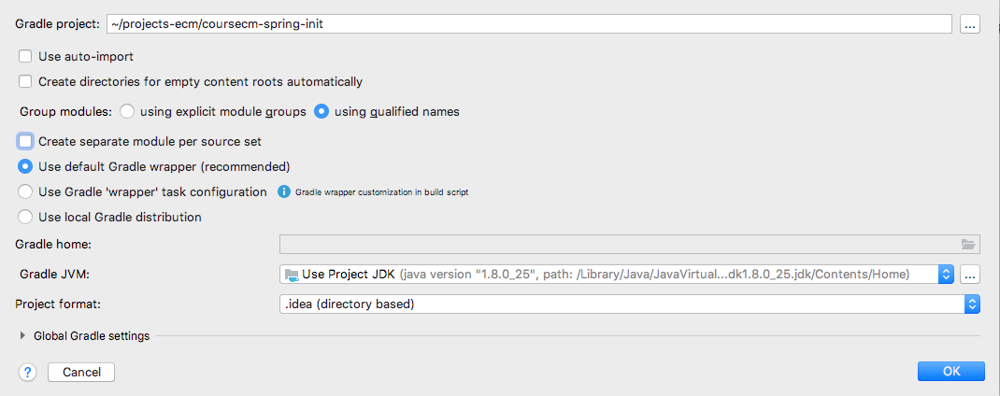
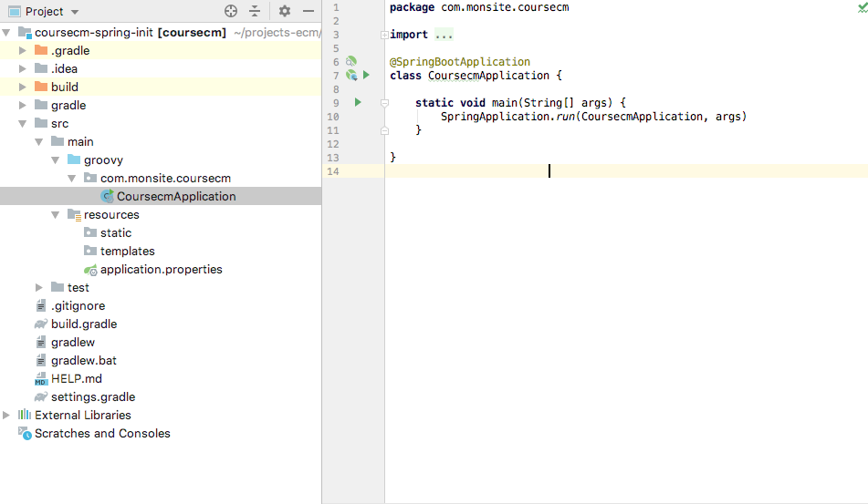

Spring init
Nous avons été capable de faire une toute petite application.
Spring boot permet de construire rapidement des applications plus complexes
Cependant, il se focalise encore davantage sur les microservices dont nous reparlerons plus tard
Pour le moment, nous allons bootstraper une application un tout petit peu plus riche
Spring Initializr
Le service start.spring.io permet de bootstraper une application en choisissant parmis de nombreux modules (web, base de données, sécurité...)
➤ Nous allons commencer très simplement en prenant le module web.
{kind=link}
Nous avons donc un projet gradle + groovy + spring boot avec le module web. Pour le package et le nom du module, vous pouvez mettre ce que vous voulez.
Gradle
Gradle est un outil de build
Il permet de gérer les dépendances (librairies) du projet et pilote la compilcation afin d'obtenir notre exécutable.
Afin de lancer le build, il suffit de taper ./gradlew build
Spring init
Il est également possible de faire la même chose en ligne de commande
$ spring init --dependencies=web,data-jpa my-project
Using service at https://start.spring.io
Project extracted to '/Users/developer/example/my-project'
ref : https://docs.spring.io/spring-boot/docs/current/reference/html/cli-using-the-cli.html
Layout du projet
➤ Cliquez sur en bas de la page et vous devriez avoir l'affichage suivant :
{kind=link}
Les répertoires et fichiers visibles sont les suivants :
- settings.gradle : fichier optionnel dans le cas d'un projet simple, il permet de définir les répertoires avec les sous modules pour un project plus complexe.
- gradle : répertoire qui contient le binaire de l'outil de build
- gradlew.bat et gradlew : l'exécutable (wrapper) de gradle
- src/main : les sources
- src/main/groovy : le code groovy
- src/main/resources : les fichiers statiques
- src/main/resources/application.properties : le fichier de configuration
- src/main/resources/templates : les templates afin de générer des pages
- src/main/resources/static : les fichiers statiques (images, css, js...)
- src/test : les sources de test
- src/test/groovy : les tests en groovy
- HELP.md : une petite doc spring boot
- .gitignore : règles d'exclusion pour git
Cette structure mélange des conventions classiques du monde java, des conventions gradle et des conventions spring boot
Même sur des projets non spring boot ou non gradle, vous retrouveriez ce genre d'arborescence.
Convention over configuration
C'est un principe de construction de frameworks et librairie visant a diminuer, voire éliminer, le besoin d'écrire des configuration.
En effet, si on décide que répertoire de source est src, plus besoin de le préciser.
Il reste possible de le faire, mais cela devient du travail en plus, qui aurait pu être évité. Lorsque l'on passe ainsi d'un projet à un autre, d'une entreprise à une autre, on retrouve alors les mêmes conventions.
C'est un principe popularisé par le framework Ruby on Rails et très largement repris par spring boot.
Gradle
➤ Téléchargez le zip du projet et ouvrez le dans votre répertoires de projets
Le fichier build.gradle a le contenu suivant (avec mes commentaires en plus)
plugins {
id 'org.springframework.boot' version '2.1.7.RELEASE' // la version du plugin spring boot
id 'groovy' // la possibilité de faire du groovy en plus du java
}
// Permet a spring boot de prendre la main sur la résolution des numéros de version des librairies
apply plugin: 'io.spring.dependency-management'
// les propriétés de mon projets
group = 'com.monsite'
version = '0.0.1-SNAPSHOT'
sourceCompatibility = '1.8'
// où aller chercher les librairies ?
repositories {
mavenCentral() // sur maven central https://repo.maven.apache.org/maven2/
}
// les librairies pour mon projet
dependencies {
// la configuration 'implementation' indique une dépendance qui va servir dans le projet final
implementation 'org.springframework.boot:spring-boot-starter-web' // spring boot pour le web
implementation 'org.codehaus.groovy:groovy' // groovy
// la configuration 'testImplementation' indique une dépendance qui sert uniquement pendant les tests
testImplementation 'org.springframework.boot:spring-boot-starter-test' // spring boot pour les tests
}
Au fil des besoins, on pourra donc rajouter des librairies dans la section dependencies
Gradle wrapper
Les fichiers gradlew, gradlew.bat et le répertoire gradle constitue le wrapper.
Il permettent de lancer le build sans avoir à installer préalablement gradle.
C’est pratique pour de l’intégration continue et sur sa machine : pas besoin d'installer gradle.
source https://docs.gradle.org/current/userguide/gradle_wrapper.html
./gradlew build
➤ Il est temps de lancer un build
$ ./gradlew build
Downloading https://services.gradle.org/distributions/gradle-5.4.1-bin.zip
...................................................................................
Welcome to Gradle 5.4.1!
Here are the highlights of this release:
- Run builds with JDK12
- New API for Incremental Tasks
- Updates to native projects, including Swift 5 support
For more details see https://docs.gradle.org/5.4.1/release-notes.html
Starting a Gradle Daemon (subsequent builds will be faster)
> Task :test
2019-08-07 10:14:29.972 INFO 4638 --- [ Thread-5] o.s.s.concurrent.ThreadPoolTaskExecutor : Shutting down ExecutorService 'applicationTaskExecutor'
BUILD SUCCESSFUL in 1m 35s
5 actionable tasks: 5 executedNormalement, vous avez vu gradle télécharger le binaire de gradle puis les dépendances.
Dépendances transitives
Il y a 3 dépendances dans notre projet mais gradle en a récupéré bien plus...
Simplement parce nos dépendances ont elles aussi des dépendances. On dit que les dépendances sont transitives.
➤ Vous pouvez les voir en tapant ./gradlew dependencies
Enfin, il a exécuté les tests et produit le binaire de notre projet. Tout est rangé dans le répertoire build
$ tree build
build
├── classes
│ └── groovy
│ ├── main
│ │ └── com
│ │ └── monsite
│ │ └── coursecm
│ │ └── CoursecmApplication.class
│ └── test
│ └── com
│ └── monsite
│ └── coursecm
│ └── CoursecmApplicationTests.class
├── generated
│ └── sources
│ └── annotationProcessor
│ └── groovy
│ ├── main
│ └── test
├── libs
│ └── coursecm-0.0.1-SNAPSHOT.jar
├── reports
│ └── tests
│ └── test
│ ├── classes
│ │ └── com.monsite.coursecm.CoursecmApplicationTests.html
│ ├── css
│ │ ├── base-style.css
│ │ └── style.css
│ ├── index.html
│ ├── js
│ │ └── report.js
│ └── packages
│ └── com.monsite.coursecm.html
├── resources
│ └── main
│ ├── application.properties
│ ├── static
│ └── templates
├── test-results
│ └── test
│ ├── TEST-com.monsite.coursecm.CoursecmApplicationTests.xml
│ └── binary
│ ├── output.bin
│ ├── output.bin.idx
│ └── results.bin
└── tmp
├── bootJar
│ └── MANIFEST.MF
├── compileGroovy
│ └── groovy-java-stubs
└── compileTestGroovy
└── groovy-java-stubs
37 directories, 15 filesOui mais...
➤ Que fait notre projet ?
$ ./gradlew bootRun
> Task :bootRun
. ____ _ __ _ _
/\\ / ___'_ __ _ _(_)_ __ __ _ \ \ \ \
( ( )\___ | '_ | '_| | '_ \/ _` | \ \ \ \
\\/ ___)| |_)| | | | | || (_| | ) ) ) )
' |____| .__|_| |_|_| |_\__, | / / / /
=========|_|==============|___/=/_/_/_/
:: Spring Boot :: (v2.1.7.RELEASE)
2019-08-07 10:28:52.697 INFO 5017 --- [ main] c.monsite.coursecm.CoursecmApplication : Starting CoursecmApplication on jaadtwo.local with PID 5017 (/Users/dbourdette/projects-ecm/coursecm-spring-init/build/classes/groovy/main started by dbourdette in /Users/dbourdette/projects-ecm/coursecm-spring-init)
2019-08-07 10:28:52.702 INFO 5017 --- [ main] c.monsite.coursecm.CoursecmApplication : No active profile set, falling back to default profiles: default
2019-08-07 10:28:54.706 INFO 5017 --- [ main] o.s.b.w.embedded.tomcat.TomcatWebServer : Tomcat initialized with port(s): 8080 (http)
2019-08-07 10:28:54.808 INFO 5017 --- [ main] o.apache.catalina.core.StandardService : Starting service [Tomcat]
2019-08-07 10:28:54.808 INFO 5017 --- [ main] org.apache.catalina.core.StandardEngine : Starting Servlet engine: [Apache Tomcat/9.0.22]
2019-08-07 10:28:54.983 INFO 5017 --- [ main] o.a.c.c.C.[Tomcat].[localhost].[/] : Initializing Spring embedded WebApplicationContext
2019-08-07 10:28:54.984 INFO 5017 --- [ main] o.s.web.context.ContextLoader : Root WebApplicationContext: initialization completed in 2180 ms
2019-08-07 10:28:55.498 INFO 5017 --- [ main] o.s.s.concurrent.ThreadPoolTaskExecutor : Initializing ExecutorService 'applicationTaskExecutor'
2019-08-07 10:28:55.864 INFO 5017 --- [ main] o.s.b.w.embedded.tomcat.TomcatWebServer : Tomcat started on port(s): 8080 (http) with context path ''
2019-08-07 10:28:55.869 INFO 5017 --- [ main] c.monsite.coursecm.CoursecmApplication : Started CoursecmApplication in 3.882 seconds (JVM running for 5.015)
2019-08-07 10:29:11.452 INFO 5017 --- [nio-8080-exec-1] o.a.c.c.C.[Tomcat].[localhost].[/] : Initializing Spring DispatcherServlet 'dispatcherServlet'
2019-08-07 10:29:11.452 INFO 5017 --- [nio-8080-exec-1] o.s.web.servlet.DispatcherServlet : Initializing Servlet 'dispatcherServlet'
2019-08-07 10:29:11.461 INFO 5017 --- [nio-8080-exec-1] o.s.web.servlet.DispatcherServlet : Completed initialization in 9 ms
<==========---> 80% EXECUTING [1m 18s]
> :bootRunA peu près rien. C'est une application web qui ne répond que des 404.

Intellij
Nous allons avoir besoin d'un éditeur de code afin de commencer à pouvoir modifier confortablement notre projet.
➤ Ouvrez le projet dans intellij (Import Project, puis sélectionez le fichier build.gradle)
➤ Configurez le projet gradle (en prenant soin de déselectionner create separate module per source set)
{kind=link}
Intellij va re télécharger les dépendances et prendre un peu de temps pour indexer les fichiers du projet.
Enfin, le projet doit ressembler à ça
{kind=link}
404
On va commencer par mettre une 404 un peu plus accueillante
Pour remplacer la 404, il suffit de mettre un fichier 404.html dans src/main/resources/static/error
Je vous propose la page suivante
<!doctype html>
<html lang="fr">
<head>
<meta charset="UTF-8">
<meta name="viewport" content="width=device-width, user-scalable=no, initial-scale=1.0, maximum-scale=1.0, minimum-scale=1.0">
<meta http-equiv="X-UA-Compatible" content="ie=edge">
<title>Erreur 404</title>
</head>
<body>
<pre>
\|/ (__)
`\------(oo) 404
|| (__)--/
||w--|| \|/
\|/
</pre>
</body>
</html>
➤ Mettez en place la page 404 que vous souhaitez (Il y a des animaux sympas sur https://www.asciiart.eu/animals)
Hot swapping
Pour mettre à jour cette page, vous dévez redemarrer à chaque fois le serveur.
Cela est dû à la nature des applications java : optimisées pour la performance en production mais elle n'aiment pas trop le remplacement à chaud
(Hot swapping).
Spring boot devtools permet de rendre cela un peu moins pénible. Rajoutez la configuration suivante dans votre build.gradle
configurations {
developmentOnly
runtimeClasspath {
extendsFrom developmentOnly
}
}
dependencies {
developmentOnly("org.springframework.boot:spring-boot-devtools")
}➤ Relancez ensuite ./gradle bootRun
Depuis Intellij, pour informer spring boot qu'il y a eu une modification, il faut faire un build du projet (icône ou menu Build > Build Project)
Index
Nous aurions pu aussi commencer par la page d'index...
➤ Mettez en place un IndexController dans un package controller qui réponde un message de bienvenue sur /
Nous allons maintenant pouvoir nous connecter à une base de données.
home